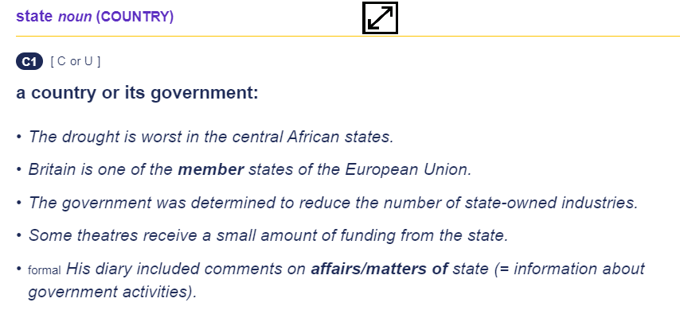
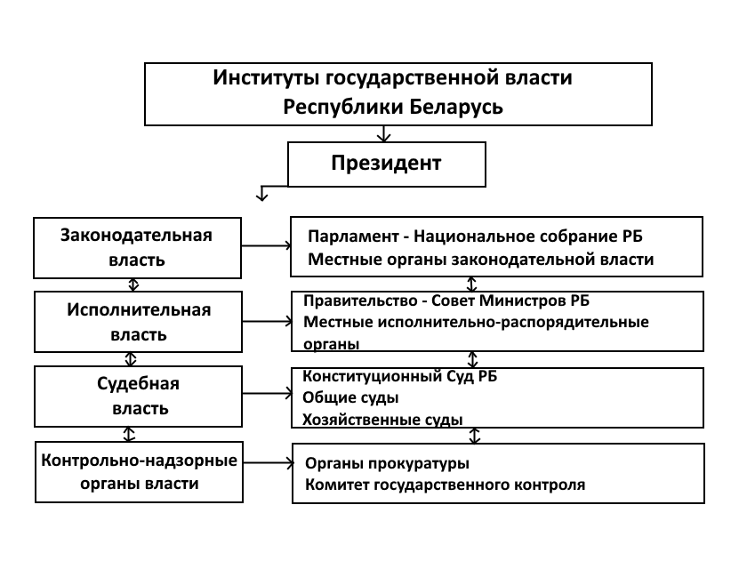
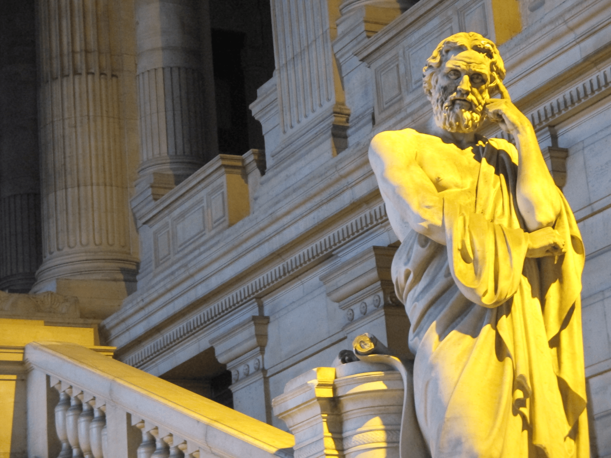
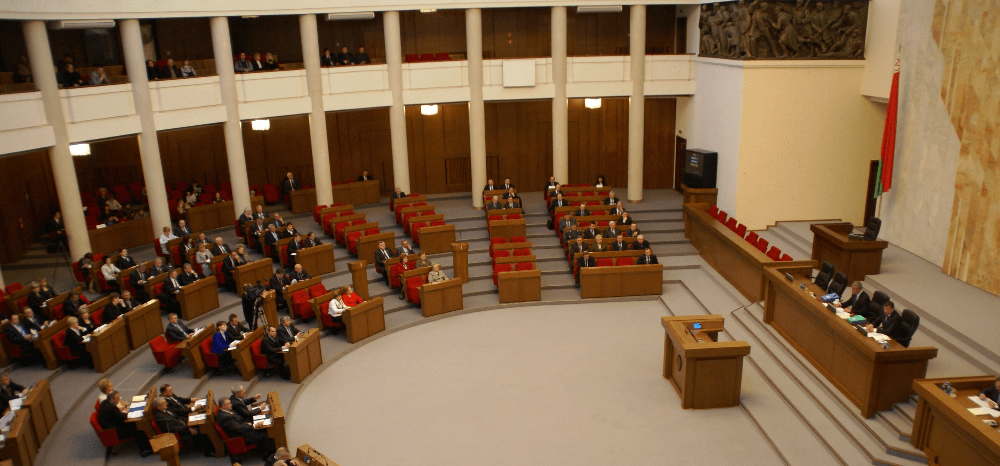
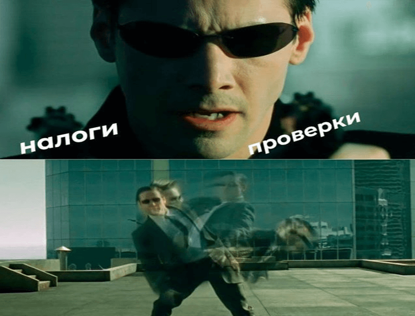

1
{kind=link}
State
Определение слова "state" в Кэмбриджском словаре.(Ке́мбриджский словарь для продвинутых учеников — один из основных словарей для изучающих английский язык. Впервые был опубликован в 1995 году издательством Кембриджского университета под названием Кембриджский международный словарь английского языка.)
2
{kind=link}
Принцип демократического разделения властей
Согласно ст. 6 Конституции Республики Беларусь «госу дарственная власть в Республике Беларусь осуществляется на основе разделения ее на законодательную, исполнительную и судебную. Государственные органы в пределах своих полномочий самостоятельны: они взаимодействуют между собой, сдерживают и уравновешивают друг друга».
3
{kind=link}
Ликург Спартанский
Ликург (др.-греч. Λυκοῦργος) — древнеспартанский законодатель, которому древние писатели единогласно приписывают политическое устройство, господствовавшее в Спарте в течение нескольких веков.
4
{kind=link}
Парламент
Национа́льное собра́ние Респу́блики Белару́сь (белор. Нацыянальны сход Рэспублікi Беларусь) — высший представительный законодательный орган Беларуси. Состоит из двух палат — Палаты представителей (нижняя палата) и Совета Республики (верхняя палата). Состав Палаты представителей — 110 депутатов. Совет Республики является палатой территориального представительства. От каждой области и города Минска избираются по восемь членов Совета Республики. В дополнение к ним восемь членов назначаются президентом Белоруссии. Таким образом, Совет Республики состоит из 64 членов.
5
{kind=link}
Референдум
Рефере́ндум (лат. referendum) — форма непосредственного волеизъявления граждан, выражающаяся в голосовании по наиболее значимым вопросам общегосударственного, регионального или местного значения. Референдум — важнейший институт прямой демократии. Представляет собой непосредственное правотворчество народа. Референдум — это один из способов участия общественности в принятии решений, важных для государства и для каждого отдельного гражданина. Принятое человеком решение влияет на результат процедуры и должно быть подкреплено осведомлённостью (информированностью) по данному вопросу.
6
{kind=link}
Железные деньги Спарты
Ликург, который много чего придумал, в числе прочего велел чеканить деньги… из железа и обрабатывать их в веществе, которое в античных источниках называется «уксус», а по делу, видимо было какой-то кислотой. В результате эти «монеты» чужакам становились не нужны, так как были ни на что непригодны.
7
{kind=link}
Налоги
Нало́г — обязательный, индивидуально безвозмездный платёж, взимаемый с организаций и физических лиц в форме отчуждения принадлежащих им на праве собственности, хозяйственного ведения или оперативного управления денежных средств, в целях финансового обеспечения деятельности государства и муниципальных образований.
8
{kind=link}
CSS
Используя !important вы даете больше важности CSS правилу. Вы можете применять его не только в табилце сталей, но и в инлайновых стилях и если вы так делаете, то вы совершаете небольшую ошибку. Безусловно !important имеет плохую репутацию, так как иногда для ленивых разработчиков гораздо удобнее перезаписать всё с помощью этого не совсем элегантного способа, вместо того, чтобы копаться в коде и решать реальную проблему, которая обычно кроется в плохой.